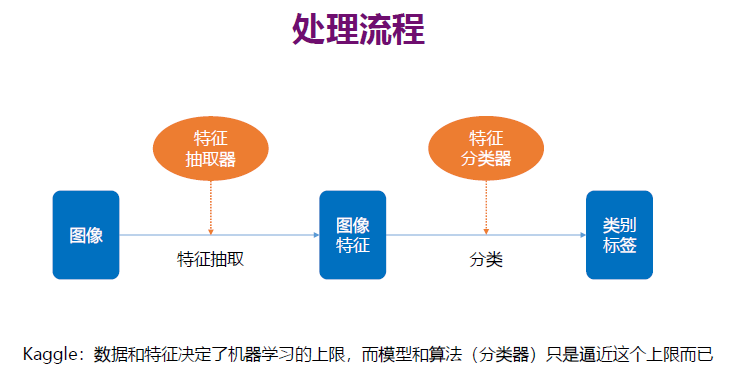
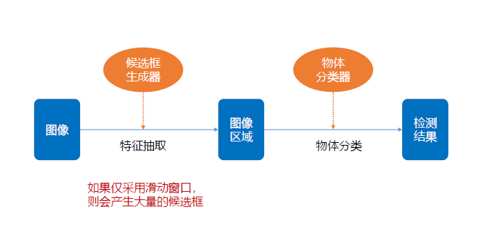
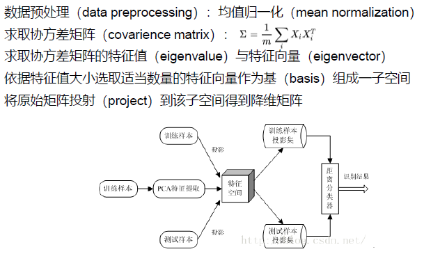
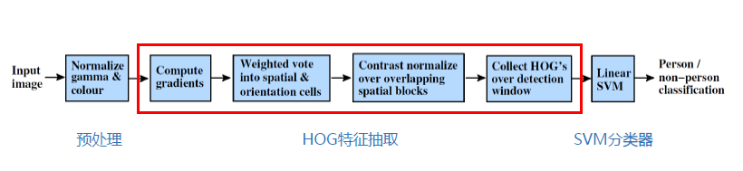
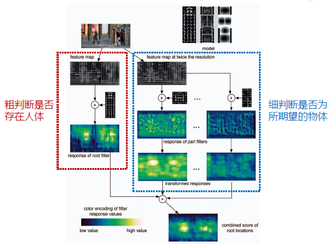
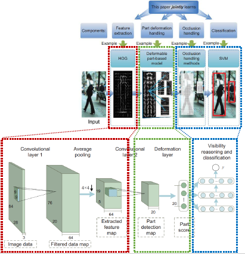
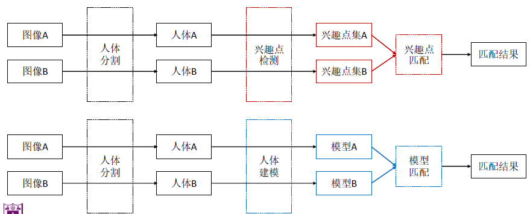
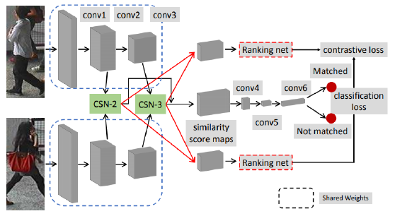
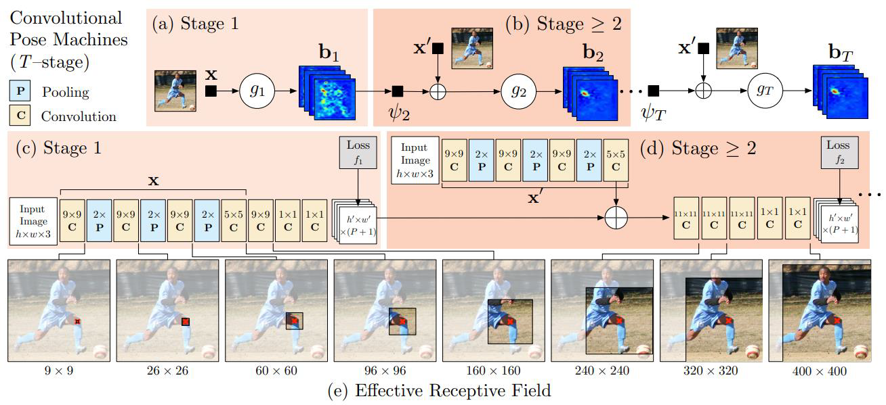
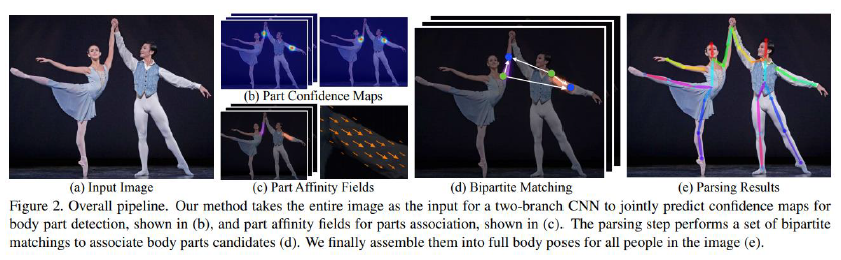

计算机视觉
Lecture 01 导论
什么是计算机视觉
计算机视觉是一个跨学科的科学领域，研究计算机如何从数字图像或视频中获得高层次的理解。从工程学的角度来看，它试图理解人类视觉系统可以完成的任务，并将其自动化。
计算机视觉发展史
20世纪50年代，主题是二维图像的分析和识别
- 1959年，神经生理学家David Hubel和Torsten Wiesel通过猫的视觉实验，首次发现了视觉初级皮层神经元对于移动边缘刺激敏感，发现了视功能柱结构，为视觉神经研究奠定了基础。Russell和他的同学研制了一台可以把图片转化为被二进制机器所理解的灰度值的仪器
20世纪60年代，开创了三维视觉理解为目的的研究
- 1965年， Lawrence Roberts《三维固体的机器感知》描述了从二维图片中推导三维信息的过程。
- 1966年， MITAI实验室的Seymour Papert教授决定启动夏季视觉项目，并在几个月内解决机器视觉问题。
20世纪70年代
- Block World [Roberts, 1963]
- 线条标注（line labeling）：综述[Nalwa, 1993]
- 边缘检测（edge detection）：综述[Davis, 1975]
- 非多边形物体的三维建模：采用广义锥作为部件，通过图案结构（pictorial structure）弹性安排部件[Fischler & Elschlager, 1973]
- 在后期的物体识别中仍受到推崇
- 图像分割：[Brice & Fennema, 1970]
20世纪80年代
- 采用本征图像（intrinsic image）理解亮度和阴影变化：[Barrow & Tenenbaum, 1981]
- 立体视觉对应（stereo correspondence）：[Marr, 1982]
- 基于亮度的光流（optical flow）：[Nagel & Enkelmann, 1986]
- 图像金字塔（image pyramids）：[Burt & Adelson, 1983]
- 由X到形状（由阴影到形状，由纹理到形状，由聚焦到形状）：[Horn, 1986]
- 更好的边缘检测算法：动态演化轮廓跟踪器[Kass, Witkin & Terzopoulos, 1988]，基于三维物理量的模型[Terzopoulos & Witkin, 1988]
- 三维距离数据（range data）处理：[Besl & Jain, 1985]
- 很多立体视觉、流、由X到形状以及边缘检测算法，如果作为变分优化问题来处理，可以用相同的数学框架来统一或描述，且可以使用正则化方法使其更加鲁棒：综述[Fischler & Firschein, 1987]
- 这类问题同样可以用离散马尔科夫随机场模型（Markkov Random Field, MRF）来表达，从而使用更好的搜索和优化算法[Geman & Geman, 1984]
- 采用卡尔曼滤波（Kalman filter）来对不确定性进行建模和更新的MRF算法的在线变形
- 将正则化和MRF算法映射到并行硬件上
20世纪90年代，特征对象识别开始成为重点
从投影重建到从运动到结构（motion from structure）：[Tomasi & Kanade, 1992]
基于物理的视觉（physics-based vision）：综述[Shafer, Healey, & Wolff, 1992]
光流：综述[Barron, Fleet, & Beauchemin, 1994]
稠密立体视觉匹配：[Okutomi & Kanade, 1993]
多视角重建：[Seitz & Dyer, 1999]
跟踪：粒子滤波[Blake & Isard, 1998]
与计算机图形学之间的结合增多：基于图像的建模和绘制
- 视角插值、全景图拼接，全光场绘制，基于图像构建3D模型
统计学习方法开始流行
- 人脸识别的主成分分析，曲线跟踪的线性动态系统
21世纪
计算摄影学（computational photography）：与计算机图形学相互影响加深
- 高动态范围（high dynamic range, HDR），纹理合成（texture synthesis），修图（inpainting）
物体识别基于特征的方法成为主流
- 星群模型（constellation model）[Fergus, Perona, & Zisserman, 2007]
- 少数派：基于轮廓的识别、基于区域分割的识别[Mori et al., 2004]
发展高效求解全局优化问题的算法
- 图割（graph cut）[Boykov, Veksler, & Zabih, 2001]
复杂机器学习方法的应用
- 深度学习，强化学习
Lecture 02 图像分类
处理流程

非深度
使用像素距离进行特征提取，使用SVM与KNN进行分类
- SVM
- svm通过train set，学习到了属于每个class的template，因此在predict的时候，test instance不再需要与所有的train data比较，只要与一个template比较，
- svm通过Wx这样的矩阵点乘代替了knn的L1或L2 distance。
- KNN
- 定义一个distance metric，用这个metric衡量test instance到所有train set 中的instance的距离，结果就是loss objective。
深度
CNN

- 卷积层(convolution layer): 执行卷积操作提取底层到高层的特征，发掘出图片局部关联性质和空间不变性质。
- 池化层(pooling layer): 执行降采样操作。通过取卷积输出特征图中局部区块的最大值(max-pooling)或者均值(avg-pooling)。降采样也是图像处理中常见的一种操作，可以过滤掉一些不重要的高频信息。
- 全连接层(fully-connected layer，或者fc layer): 输入层到隐藏层的神经元是全部连接的。
- 非线性变化: 卷积层、全连接层后面一般都会接非线性变化层，例如Sigmoid、Tanh、ReLu等来增强网络的表达能力，在CNN里最常使用的为ReLu激活函数。
- Dropout : 在模型训练阶段随机让一些隐层节点权重不工作，提高网络的泛化能力，一定程度上防止过拟合。
Lecture 03 物体检测
处理流程

非深度
采用滑动窗口生成候选框，将候选框内物体使用SVM/KNN进行检测
深度
两阶段（2 stage ）检测模型
R-CNN
- 基于图片提出若干可能包含物体的区域（即图片的局部裁剪，被称为Region Proposal），文中使用的是Selective Search算法；
- 在提出的这些区域上运行当时表现最好的分类网络（AlexNet），得到每个区域内物体的类别。
Fast R-CNN
- 将基础网络在图片整体上运行完毕后，再传入R-CNN子网络，共享了大部分计算
单阶段（1-stage）检测模型
- YOLO
- 将原图划分为SxS的网格，如果一个目标的中心落入某个格子，这个格子就负责检测该目标
- 每个网格要预测B个bounding boxes以及C个类别概率（每个格子只判断一次类别每个bounding box预测5个变量 (x, y, w, h, confidence)，其中 x, y, w, h 需要做归一化，网络输出为 SxSx (5xB+C）
- 全连接层输出 reshape 成SxSx (5*B+C）的多维矩阵，通过 NMS 得到输出框
Lecture 04 物体分割
带有语义标签的像素分类问题（语义分割）或单个对象分割问题（实例分割）
- 语义分割
- 对所有图像像素使用一组对象类别（如人、车、树、天空）进行像素级标记
- 实例分割
- 通过检测和描绘图像中的每个感兴趣对象（例如，个体的分割），进一步扩展了语义分割的范围。
非深度
- Graph cut提取物体
- 分类器进行物体分割
深度
FCN 语义分割
- **全卷积化(Fully Convolutional)**：用于解决逐像素(pixel-wise)的预测问题。通过将基础网络(例如VGG)最后面几个全连接层换成卷积层，可实现任意大小的图像输入，并且输出图像大小与输入相对应；
- 反卷积(deconvolution) ：上采样操作，用于恢复图片尺寸，方便后续进行逐像素预测;
- **跳跃结构(skip architecture)**：用于融合高低层特征信息。通过跨层连接的结构，结合了网络浅层的细(fine-grain)粒度信息信息以及深层的粗糙(coarse)信息，以实现精准的分割任务。
Lecture 05 人脸检测与识别
人脸检测
基于模板匹配的方法
采用人脸模板图像与被检测图像中的各个位置进行匹配，确定这个位置处是否有人脸
基于深度学习的方法
采用卷积神经网络来提升特征，但直接 用滑动窗口加卷积 网络会造成计算量过大
人脸识别
基于特征匹配的方法
对人脸图像提取全局特征，对特征向量进行匹配，将各个维度相近的特征向量对应的人脸对象认为属于同一个人
流程

基于深度学习的方法
利用卷积神经网络（CNN）对人脸图像进行学习，用于对输入图像提取出对区分不同人脸的特征向量 ，替代人工设计的特征
Lecture 06 行人检测、重识别和姿态估计
行人检测
基于手工特征的方法
对图像抽取局部特征，根据这些特征训练分类器，用于区分行人和背景
流程

基于部件检测的方法
把人体分为头肩，躯干，四肢等部分，对这些部分分别进行检测，然后将结果组合起来，解决密集和遮挡场景下的行人检测
流程

基于深度学习的方法
利用基于深度学习学到的特征具有很强层次表达能力和很好的鲁棒性的特点，解决在不同场景下的行人检测
流程

行人重识别（Person Re-identification）
基于手工特征的方法
流程

基于深度学习的方法
流程

姿态估计（Pose Estimation）
单人姿态估计方法
流程

多人姿态估计方法
- 自顶向下：先找到图片中所有行人，然后对每个行人做姿态估计，寻找每个人的关键点
- 自底向上：先是找图片中所有的关键点，再将这些关键点组装成行人
流程

Lecture 07 文字检测与识别
传统文本检测+识别方法
- 采用自下而上的思路，先进行笔画或字符检测，有基于连接组件和基于滑动窗口两种方式，再进行非文本组件过滤、文本行构建、文本行验证等后续步骤
- 往往基于手工设计的特征，如SWT、MSER、HoG等，来区分文本和背景，无法利用上下文信息，如果某个字符由于存在干扰或其他原因导致模糊无法识别时会将其划分到非文本类，这会导致检测出大量的非文本组件，进而出现错误累积
基于深度学习的文本检测方法
基于候选框的文本检测方法
LSPR（基于Faster RCNN）
- 在传统two-stage目标检测框架的基础上，增加了水平7个维度和竖直7个维度的各2个点的回归，减少网络计算量的同时加入了回归点的先验知识，实现任意形状的文本检测
- 在构建最终的文本行时，可以根据文本行长边与滑动线的点集（也可以根据两个方向所有的点集，一般用普通四边形）进行构建
SegLink（基于SSD）
- 既然一次性检测整个文本行比较困难，就先检测局部片段，然后通过规则将所有的片段进行连接，得到最终的文本行
- 好处：可以检测任意长度的文本行
- 提出了文本行检测的两个基本组成元素：segment和link；通过改进的网络同时预测不同尺度的segments和link；根据不同的link（层内连接(within-layer link)和跨层连接(crosslayer link)）得到最终的文本行
- 既然一次性检测整个文本行比较困难，就先检测局部片段，然后通过规则将所有的片段进行连接，得到最终的文本行
FEN（基于RFCN）
- 增加了特征融合、positive mining策略、自适应权重的位置敏感Roi层
- 提出了FEN网络结构（Feature Enhence Network)，对高维度和低维度的语义特征进行融合，提高文本检测的准确率和召回率
- 解决采用只利用３×３的滑动窗口特征和利用高维度的特征对目标检测窗口进行精修的不足
- 提出了自适应权重的位置敏感Roi池化层，进一步提升文本检测的准确率
- 解决通用目标检测只利用单一权重的位置敏感Roi池化层
- 提出了正样本挖掘策略（positive mining strategy)
- 解决文本检测精修阶段的正负样本不均衡的问题
基于分割的文本检测方法
SPCNet（基于Mask RCNN）
- 增加了文本上下文模块（TCM模块）和Re-score机制
- 文本上下文信息模块：解决False positive，包括金字塔注意力模块(PAM)和金字塔特征融合模块(PFM)
- 文本得分(Re-score)：融合分类得分(CS)和实例得分(IS)
- 增加了文本上下文模块（TCM模块）和Re-score机制
TextSnake（基于FCN）
- 提出了一种更加灵活的文本行表征方式（TextSnake)，可以很好地表征任意形状的文本行
- 通过一个个有序重叠的disk串联组成，每个disk由圆心（对应的文本行区域的中心）、半径、方向来表征
- 文本行的表征属性（圆心、半径、方向）由FCN来估计出
- 提出了一种更加灵活的文本行表征方式（TextSnake)，可以很好地表征任意形状的文本行
基于混合的文本检测方法
- EAST：结合了DenseBox和Unet网络
- 先用一个通用的网络（Pvanet、VGG16、Resnet等)作为base net ，用于特征提取
- 基于上述主干特征提取网络， 抽取不同level 的feature map，这样可以得到不同尺度的特征图
- 解决文本行尺度变换剧烈的问题，ealy stage可用于预测小的文本行，late-stage可用于预测大的文本行
- 特征合并层：将抽取的特征进行merge，合并规则采用了U-net的方法
- 网络输出层：包含文本得分和文本形状，根据不同文本形状(可分为RBOX和QUAD)，输出也各不相同
文本识别模型
- CRNN 模型（ Convolutional Recurrent Neural Network）
- 可识别较长的文本序列
- 包含CNN特征提取层和BLSTM序列特征提取层，能够进行端到端的联合训练
- 利用BLSTM和CTC部件学习字符图像中的上下文关系，从而有效提升文本识别准确率，使得模型更加鲁棒
- 预测过程中，前端使用标准的CNN网络提取文本图像的特征，利用BLSTM将特征向量进行融合以提取字符序列的上下文特征，然后得到每列特征的概率分布，最后通过转录层(CTC rule)进行预测得到文本序列
端到端模型
- FOTS（Fast Oriented Text Spotting）
- 检测和识别任务共享卷积特征层，既节省了计算时间，也比两阶段训练方式学习到更多图像特征
- 引入了旋转感兴趣区域（RoIRotate）, 可以从卷积特征图中产生出定向的文本区域，从而支持倾斜文本的识别
Lecture 08 光流估计与物体跟踪
光流估计（Optical Flow Estimation）
基于深度学习的光流估计
FlowNet
- 输入为待估计光流的两张图像 输出即为图像每个像素点的光流
- FlowNetSimple：将两张图简单排列到 一起作为CNN encoder 的输入
- FlowNetCorr ( Correlation)：先对两张图像分别进行卷积获得较为高层的feature 后再引入人为定义的规则将信息合并
- 给定每个像素groundtruth的光流每个像素的loss 定义为预测的光流和groundtruth之间的欧氏距离EPE End Point Error
- 数据集FlyingChairs的生成方式为将虚拟的椅子叠加到背景图像中，并且背景图和椅子使用不同的仿射变换得到对应的另一张图
- 输入为待估计光流的两张图像 输出即为图像每个像素点的光流
FlowNet 2.0
- 通过堆叠多个FlowNet 网络实现由粗到精的光流估计
- 针对Flownet对比较小的物体运动估计不准的问题，将卷积核缩小并缩短卷积步长
- 合成了新的数据集在FlyingChairs的基础上增加了一些小位移数据，还混合了更复杂的数据集Things 3D
- 达到 了传统的光流估计算法的最好结果，并且速度上比传统算法快两个数量级
PWC net
- 采用图像金字塔 、映射和匹配代价容量计算后两者不需要训练参数可以减小参数量
- 1024*436的视频上做到了视频流实时光流估计(35帧/秒), 参数量是 Flownet 2.0 的 0.06倍，并且训练策略也更加简单
MaskFlownet
- PWC net的改进版，采用非对称的、结合遮挡掩膜的匹配代价容量计算排除在一帧中被遮挡的像素
目标跟踪/物体跟踪（Object Tracking）
基本思路：输入初始化目标框，在下一帧中产生众多候选框，提取这些候选框的特征，然后对这些候选框评分，最后在这些评分中找一个得分最高的候选框作为预测的目标，或者对多个预测值进行融合得到更优的预测目标
- 运动模型（Motion Model）：如何产生众多的候选样本，常用的有两种方法：粒子滤波（Particle Filter）和滑动窗口（Sliding Window）
- 特征提取（Feature Extractor）：利用何种特征表示目标，常用的特征被分为两种类型：手工设计的特征（Hand-crafted feature）和深度特征（Deep feature）
- 观测模型（Observation Model）：如何为众多候选样本进行评分，可分为两类：生成式模型（Generative Model）和判别式模型（Discriminative Model），生成式模型通常寻找与目标模板最相似的候选作为跟踪结果，判别式模型通过训练一个分类器去区分目标与背景，选择置信度最高的候选样本作为预测结果
- 模型更新（Model Update）：如何更新观测模型，以适应目标表观的变化，防止跟踪过程发生漂移
- 集成方法（Ensemble Method）：如何融合多个决策获得一个更优的决策结果，可以笼统地划分为两类：在多个预测结果中选一个最好的，或是利用所有的预测加权平均
主流的目标跟踪算法：相关滤波（ correlation filter）
基本思路：利用滤波模板与目标候选区域做相关运算，最大输出响应的位置为当前帧的目标位置
代表性方法：
- MOOSE：利用目标的多个样本作为训练样本，提高鲁棒性，设计模板在线更新方法
- CSK：针对MOSSE中采用稀疏采样造成的样本冗余问题，扩展了岭回归、基于循环移位的近似密集采样方法、核方法
- CN（color names）：在CSK的基础上由单通道灰度图像扩展到多通道颜色
- KCF/ DCF：对岭回归、循环矩阵、核技巧、快速检测等做了完整的数学推导；在CSK的基础上扩展了多通道特征；采用HoG特征，核函数有三种高斯核、线性核和多项式核
- DSST：将目标跟踪看成目标中心平移和目标尺度变化两个独立问题，先用HoG特征的DCF训练平移相关滤波，负责检测目标中心平移，再用HoG特征的MOSSE训练另一个尺度相关滤波，负责检测目标尺度变化
主流的目标跟踪算法：深度学习
优势：更好地提取目标特征，低层特征有较高的分辨率能够对目标进行精准的定位，高层特征包含更多的语义信息，能够处理较大的目标变化和防止跟踪器漂移，能够对目标进行范围定位
缺点：网络的训练和速度
代表性方法：
SiamFC：核心CNN是AlexNet，去掉padding和全连接层FC，加入BN层，改为全卷积网络FCN；特征来自AlexNet的conv5，在线不更新，目前最优秀的long-term跟踪算法
EAST：先用速度比较快的简单特征检测目标，如果检测置信度比较高就提前终止输出结果，如果置信度低就计算下一阶特征重新检测（特征级联从简单到复杂依次是pixel-HOG-conv1-conv2-conv3-conv4-conv5）；CPU友好，平均速度23.2fps，50%时间速度是190 fps
CFNet：让CF成为CNN中的一个层，负责相关滤波器的构建和更新，可以端到端训练
Lecture 09 更多前沿课题
- 人群计数/人群密度估计（Crowd counting）
- 显著性分析（Saliency Analysis）
- 视觉关系检测
- 人物交互检测（ Human Object Interaction Detection）
- 深度估计
- 视觉与自然语言（Vision and Language）
- 计算摄影学（Computational Photography）
- 生成对抗网络（ Generative Adversarial Networks）